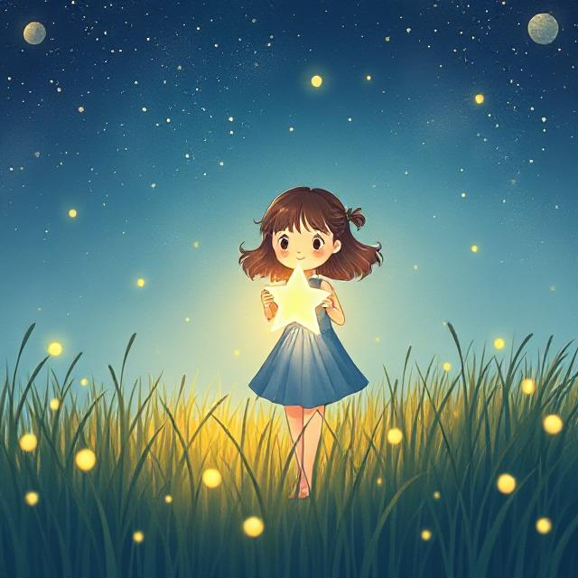

In a quiet village, a curious girl named Mira loved to watch the night sky. One night, as she lay on a hilltop, a star fell from the sky — right into her hands.
It glowed with warmth and pulsed like a heartbeat. Mira tried to show others, but no one else could see the light. To them, it looked like she was holding nothing.
She carried the star everywhere, protecting it, even when others laughed at her. Over time, the star began to shine brighter. Flowers grew where she walked, and sad people smiled when she passed.
Years later, a terrible storm hit the village, and darkness filled the skies. Mira climbed the tallest hill and released the star. It soared into the clouds, lighting up the sky and stopping the storm.
The villagers realized her light had saved them. Mira never asked for thanks — she only smiled and watched her star sparkle from above.